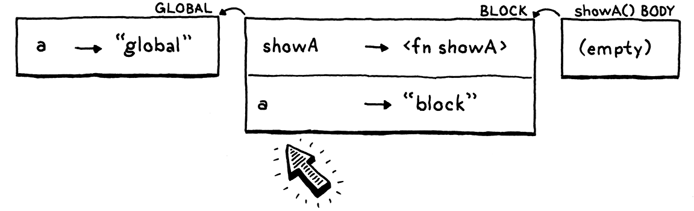

解析和绑定
偶尔你会发现自己处于一种奇怪的境地。你以最自然的方式逐步进入它，但当你身处其中时，你会突然感到惊讶，并问自己这一切到底是怎么来的。
-- Thor Heyerdahl,Kon-Tiki
不好了！我们实现的语言正在漏水！回到我们添加变量和块的时候，我们的作用域界定得很好而且很紧密。但是当后来添加闭包时，我们以前防水的解释器上出现了一个洞。大多数真实的程序不太可能溜过这个洞，但作为语言的实现者，我们发誓要关心正确性，即使是在语义最深、最潮湿的角落。
我们将用整整一章来探索这个漏洞，然后小心地修补它。在此过程中，我们将对 Lox 和 C 传统中的其他语言使用的词法作用域有更严格的理解。我们还将有机会了解语义分析——一种无需运行即可从用户源代码中提取含义的强大技术。
11.1 静态范围
快速复习一下：Lox 与大多数现代语言一样，使用词法作用域。这意味着可以通过阅读程序文本来弄清楚变量名引用的是哪个声明。例如：
var a = "outer";
{
var a = "inner";
print a;
}
在这里，我们知道print a 的是其上一行声明的变量，而不是全局变量。运行程序不会——也不能影响这一点。作用域规则是语言静态语义的一部分，这就是它们也被称为静态作用域的原因。
我还没有详细说明这些范围规则，但现在是精确的时候了：
使用的变量指向前面的变量声明， 该变量声明是指包含使用变量表达式的最内层范围且具有相同名称。
这仍然远不及真正的语言规范那么精确。这些文档必须非常明确，即使是火星人或彻头彻尾的恶意程序员也将被迫实施正确的语义，前提是他们遵循规范的字面意思。
当一种语言可能被竞争公司实施时，这种精确性很重要，这些公司希望他们的产品与其他公司不兼容，从而将客户锁定在他们的平台上。对于这本书，我们可以谢天谢地地忽略那些阴暗的恶作剧。
其中有很多要展开解释的东西：
-
我说“变量用法 variable usage”而不是“变量表达式 variable expression”来涵盖变量表达式和赋值。与“使用变量的表达式”类似。
-
“前边 Preceding”是指出现在程序文本之前。
c
var a = "outer";
{
print a;
var a = "inner";
}
在这里，被打印的a是外部的，因为它出现在使用它的语句print之前。在大多数情况下，在直接的代码行中，文本中的声明出现在使用之前。但这并不总是正确的。正如我们将看到的，函数可能会延迟一段代码，这样它的动态时间执行就不再反映静态文本顺序。
在 JavaScript 中，用var声明的变量隐式“提升”到块的开头。块中对该名称的任何使用都将引用该变量，即使该使用出现在声明之前也是如此。当你用 JavaScript 写这个时：
js { console.log(a); var a = "value"; }它的行为如下：
js { var a; // Hoist. console.log(a); a = "value"; }这意味着在某些情况下，您可以在初始化程序运行之前读取变量——这是一个恼人的错误来源。稍后添加了
let用于声明变量的备用语法以解决此问题。
- “Innermost”是因为变量遮蔽。在封闭范围内可能有多个具有给定名称的变量，如：
js
var a = "outer";
{
var a = "inner";
print a;
}
我们的规则通过说最里面的作用域获胜来消除这种情况的歧义。
由于此规则没有提及任何运行时行为，这意味着变量表达式在整个程序执行过程中始终引用相同的声明。到目前为止，我们的解释器大部分都正确地执行了规则。但是当我们添加闭包时，一个错误悄悄进入了。
var a = "global";
{
fun showA() {
print a;
}
showA();
var a = "block";
showA();
}
在你输入并运行它之前，决定你认为它应该打印什么。
我知道，这是一个完全病态的、人为设计的程序。这很奇怪。任何有理智的人都不会编写这样的代码。但是，如果您长期从事编程语言游戏，那么您将花费比您预期更多的时间来处理这样奇怪的代码片段。
OK...知道了吗？如果您熟悉其他语言的闭包，您会期望它打印两次“global”。第一次调用showA()肯定会打印“global”，因为我们还没有到达内部声明a。根据我们的规则，变量表达式总是解析为相同的变量，这意味着第二次调用showA()应该打印相同的东西。
然而，它打印：
global
block
让我强调一下，这个程序从不重新分配任何变量并且只包含一个print语句。然而，不知何故，print针对从未分配的变量的语句在不同的时间点打印了两个不同的值。我们肯定在某个地方弄坏了什么。
11.1.1 作用域和可变环境
在我们的解释器中，环境是静态作用域的动态表现。两者大多保持同步——当进入一个新的作用域时，会创建一个新的环境，而当离开该作用域时，会丢弃它。我们对环境执行的另一项操作是：将一个变量绑定到一个环境中。这就是我们的错误所在。
来看看这个有问题的例子，看看每一步的环境是什么样的。首先，我们在全局范围内声明a。

这提供了一个包含单个变量的单一环境。然后进入块并执行 的声明showA()。

我们为块获得了一个新环境。在那里，我们声明了一个名称showA它绑定到我们创建的 LoxFunction 对象来表示该函数。该对象有一个closure字段，用于捕获声明函数的环境，因此它有一个返回块环境的引用。
现在调用showA()。

解释器动态地为showA()的函数体创建一个新的环境?。它是空的，因为该函数没有声明任何变量。该环境的父级是函数的闭包——外部块环境。
在showA()的函数体内，我们打印a的值。解释器通过遍历环境链来查找这个值。在找到它并打印之前，它一直到达全局环境"global"。很好。
接下来，我们声明第二个a，这次是在块内。

它与showA()处于同一个块——同一个范围，所以它进入同一个环境，这也是同一个环境showA()的闭包所指的。这就是它变得有趣的地方。此时再次调用showA()。

我们又为showA()的函数体创建一个新的空环境，将其连接到那个闭包，然后运行函数体。当解释器遍历环境链以查找a时，它现在会在块环境中发现一个新的a !!!。
我选择以一种希望与您对作用域的非正式直觉一致的方式来实现环境。我们倾向于认为一个块中的所有代码都在同一范围内，因此我们的解释器使用单一环境来表示它。每个环境都是一个可变的哈希表。当声明一个新的局部变量时，它会被添加到该作用域的现有环境中。
就像生活中的许多人一样，这种直觉并不完全正确。一个块不一定都是相同的范围。考虑：
{
var a;
// 1.
var b;
// 2.
}
在第一个标记行，只有a在范围内。在第二行，a和b两者都是。如果您将“作用域”定义为一组声明，那么它们显然不是同一个作用域——它们不包含相同的声明。这就像每个var语句将块分成两个单独的范围，声明变量之前的范围和声明之后的范围，其中包括新变量。
一些语言使这种分裂变得明确。在 Scheme 和 ML 中，当您使用
let声明局部变量时，您还描述了新变量在范围内的后续代码。没有隐含的“块的其余部分”。
但在我们的实现中，环境确实表现得像整个块是一个范围，只是一个随时间变化的范围。闭包不喜欢那样。声明函数时，它会捕获对当前环境的引用。该函数应捕获声明该函数时存在的环境的冻结快照。但是，在 Java 代码中，它引用了实际的可变环境对象。当稍后在环境对应的范围内声明变量时，闭包会看到新变量，即使声明不在函数之前也是如此。
11.1.2 持久化环境
有一种编程风格使用所谓的持久数据结构。与您在命令式编程中熟悉的松散数据结构不同，持久数据结构永远无法直接修改。相反，对现有结构的任何“修改”都会产生一个全新的对象，其中包含所有原始数据和新修改。原件保持不变。
这听起来可能会浪费大量内存和时间来为每个操作复制结构。实际上，持久数据结构在不同的“副本”之间共享大部分数据。
如果我们将该技术应用于环境，那么每次您声明一个变量时，它都会返回一个新环境，其中包含所有先前声明的变量以及一个新名称。声明一个变量会进行隐式“拆分”，在变量声明之前和之后都有一个环境：

当函数被声明时，闭包保留对正在运行的环境实例的引用。由于该块中的任何后续声明都会产生新的 Environment 对象，闭包将看不到新变量，我们的错误将得到修复。
这是解决问题的合法方法，也是在 Scheme 解释器中实现环境的经典方法。我们可以为 Lox 这样做，但这意味着返回并更改一堆现有代码。
我不会拖你的后腿。我们将保持表示环境的方式不变。我们不会让数据更加静态结构化，而是将静态变量解析融入访问操作本身。
11.2 语义分析
解释器在每次评估变量表达式时都会解析一个变量——追踪它引用的声明。如果该变量被包裹在一个运行一千次的循环中，那么该变量将被重新解析一千次。
我们知道静态范围意味着一个变量的使用总是解析到相同的声明，这可以通过查看源码文本来确定。既然如此，为什么每次都动态地做呢？这样做不仅会打开导致我们烦人的错误的漏洞，而且还会不必要地减慢速度。
更好的解决方案是每个变量只解析一次。编写一段代码来检查用户的程序，找到提到的每个变量，并找出每个变量引用的声明。这个过程是一个语义分析的例子。解析器仅判断程序在语法上是否正确（句法分析），而语义分析则走得更远，开始弄清楚程序的实际含义。在这种情况下，我们的分析将解析变量绑定。我们不仅会知道一个表达式是一个变量，还会知道它是哪个变量。
有很多方法可以存储变量与其声明之间的绑定。当我们使用 Lox 的 C 解释器时，我们将拥有一种更有效的存储和访问局部变量的方法。但对于 jlox，我想尽量减少我们对现有代码库造成的附带损害。我不想扔掉一堆大部分都很好的代码。
相反，我们将以充分利用现有环境类的方式存储分辨率。回想一下在有问题的示例中如何解释 a的访问。
在第一个（正确的）评估中，我们在找到a的全局声明之前查看链中的三个环境。然后，当稍后在块范围内声明内部a时，它会覆盖全局范围。
下一次查找遍历链，在第二个环境中找到a并停在那里。每个环境对应于声明变量的单个词法范围。如果能够确保变量查找始终遍历 环境链中相同数量的链接，那将确保它每次都能在相同范围内找到相同的变量。
要“解析 resolve”一个变量的使用，我们只需要计算声明的变量将在环境链中“跳”多少次。有趣的问题是什么时候进行这种计算——或者换句话说，我们在解释器的实现中的什么地方填充它的代码？
由于我们正在根据源代码的结构计算静态属性，因此显而易见的答案是在解析器中。那是传统的方法，我们稍后将把它放在 clox 中。它在这里也可以工作，但我想找个借口向您展示另一种技术。我们将把我们的解析器写成一个单独的遍历过程。
11.2.1 变量解析过程
在解析器生成语法树之后，但在解释器开始执行它之前，我们将遍历树以解析它包含的所有变量。解析和执行之间的额外传递很常见。如果 Lox 有静态类型，我们可以在其中滑动类型检查器。优化通常也像这样在单独的遍历中实现。基本上，任何不依赖仅在运行时可用的状态的工作都可以通过这种方式完成。
变量解析过程就像一种迷你解释器。它遍历树，访问每个节点，但静态分析不同于动态执行：
-
没有副作用。当静态分析访问打印语句时，它实际上并没有打印任何东西。对原生函数的调用或其他与外界联系的操作被取消，没有任何效果。
-
没有控制流。循环只被访问一次。
if在语句中访问两个分支。逻辑运算符没有短路。
变量解析过程访问每个节点一次，因此其性能为O(n)，其中n是语法树节点的数量。更复杂的分析可能具有更大的复杂性，但大多数都经过精心设计，使其呈线性或相差不远。如果您的编译器随着用户程序的增长而呈指数级变慢，那将是一个令人尴尬的失礼。
11.3 变量解析类
与 Java 中的所有内容一样，我们的变量解析过程实现在一个类中。
package com.craftinginterpreters.lox;
import java.util.HashMap;
import java.util.List;
import java.util.Map;
import java.util.Stack;
class Resolver implements Expr.Visitor<Void>, Stmt.Visitor<Void> {
private final Interpreter interpreter;
Resolver(Interpreter interpreter) {
this.interpreter = interpreter;
}
}
// lox/Resolver.java, create new file
由于解析器需要访问语法树中的每个节点，因此它实现了已有的访问者接口。在解析变量时，只有几种节点很有趣：
-
块语句为其包含的语句引入了一个新的范围。
-
函数声明为其函数体引入了一个新范围，并将其参数绑定在该范围内。
-
变量声明将新变量添加到当前作用域。
-
变量和赋值表达式需要解析它们的变量。
其余的节点没有做任何特殊的事情，但我们仍然需要为它们实现遍历到它们的子树的访问方法。尽管+表达式本身没有任何变量需要解析，但它的任何一个操作数都可以。
11.3.1 解析块
我们从块开始，因为它们创建了所有魔法发生的本地作用域。
@Override
public Void visitBlockStmt(Stmt.Block stmt) {
beginScope();
resolve(stmt.statements);
endScope();
return null;
}
// lox/Resolver.java, add after Resolver()
这开始了一个新的作用域，遍历到块内的语句，然后丢弃该作用域。有趣的东西存在于这些辅助方法中。我们从简单的开始。
void resolve(List<Stmt> statements) {
for (Stmt statement : statements) {
resolve(statement);
}
}
// lox/Resolver.java, add after Resolver()
这会遍历语句列表并解析每个语句。它依次调用：
private void resolve(Stmt stmt) {
stmt.accept(this);
}
// lox/Resolver.java, add after visitBlockStmt()
当我们这样做时，需要添加另一个重载，稍后将需要它来解析表达式。
private void resolve(Expr expr) {
expr.accept(this);
}
// lox/Resolver.java, add after resolve(Stmt stmt)
这些方法类似于Interpreter中的evaluate()和方法——它们反过来将访问者模式应用于给定的语法树节点。execute()
真正有趣的行为是围绕作用域的。像这样创建一个新的块作用域：
private void beginScope() {
scopes.push(new HashMap<String, Boolean>());
}
// lox/Resolver.java, add after resolve()
词法作用域嵌套在解释器和解析器中。它们的行为就像一个堆栈。解释器使用链表（环境对象链）实现该堆栈。在解析器中，我们使用实际的 Java 堆栈。
private final Interpreter interpreter;
private final Stack<Map<String, Boolean>> scopes = new Stack<>();
Resolver(Interpreter interpreter) {
// lox/Resolver.java, in class Resolver
scopes 字段跟踪当前作用域堆栈，嗯，在作用域内。堆栈中的每个元素都是一个表示单个块作用域的映射。与在环境中一样，键是变量名。值是布尔类型，原因我很快就会解释。
作用域堆栈仅用于本地块作用域。在全局范围内在顶层声明的变量不会被解析器跟踪，因为它们在 Lox 中更具动态性。当解析一个变量时，如果在局部作用域的堆栈中找不到它，就假设它一定是全局的。
由于作用域存储在显式堆栈中，因此退出一个很简单。
private void endScope() {
scopes.pop();
}
// lox/Resolver.java, add after beginScope()
现在可以压入和弹出一堆空作用域。让我们把一些东西放进去。
11.3.2 解析变量声明
解析变量声明会向当前最内层作用域的Map添加一个新条目。这看起来很简单，但我们需要跳一段小舞。
@Override
public Void visitVarStmt(Stmt.Var stmt) {
declare(stmt.name);
if (stmt.initializer != null) {
resolve(stmt.initializer);
}
define(stmt.name);
return null;
}
// lox/Resolver.java, add after visitBlockStmt()
我们将绑定分为两个步骤，声明(declare)和定义(define)，以处理像这样有趣的边缘情况：
var a = "outer";
{
var a = a;
}
当局部变量的初始值设置项引用与声明的变量同名的变量时会发生什么？我们有几个选择：
- 运行初始化程序，然后将新变量放入作用域中。在这里，新的局部变量
a将使用全局变量的值“outer”进行初始化。换句话说，先前的声明将脱糖为：
js
var temp = a; // Run the initializer.
var a; // Declare the variable.
a = temp; // Initialize it.
- 将新变量放在作用域中，然后运行初始化程序。这意味着您可以在变量初始化之前观察它，因此我们需要弄清楚它在那时会有什么值。大概吧
nil。这意味着新的局部a变量将被重新初始化为它自己的隐式初始化值nil，现在脱糖看起来像：
js
var a; // Define the variable.
a = a; // Run the initializer.
- 使在其初始值设定项中引用变量成为错误。如果初始化程序提到正在初始化的变量，则让解释器在编译时或运行时失败。
前两个选项中的任何一个看起来像用户真正想要的东西吗？变量遮蔽很少见并且通常是错误的，因此根据遮蔽变量的值初始化遮蔽变量似乎不太可能是故意的。
第二种选择就更没用了。新变量的值始终nil为。直呼其名毫无意义。您可以改用显式nil。
由于前两个选项可能会掩盖用户错误，我们将采用第三个选项。此外，我们会将其设为编译错误而不是运行时错误。这样，在运行任何代码之前都会提醒用户注意问题。
为了做到这一点，当我们访问表达式时，我们需要知道我们是否在某个变量的初始值设置项中。我们通过将绑定分成两个步骤来做到这一点。首先是声明它。
private void declare(Token name) {
if (scopes.isEmpty()) return;
Map<String, Boolean> scope = scopes.peek();
scope.put(name.lexeme, false);
}
// lox/Resolver.java, add after endScope()
声明将变量添加到最内层的作用域，以便它遮蔽任何外部作用域，这样我们就知道该变量存在。我们通过将其名称绑定到作用域Map中来将其标记false意思是 “尚未准备好” 。与作用域Map中的键关联的值表示我们是否已完成解析该变量的初始值设置项。
声明变量后，在新变量现在存在但不可用的相同范围内解析其初始化表达式。一旦初始化表达式完成，变量就准备好了。我们通过defining来做到这一点。
private void define(Token name) {
if (scopes.isEmpty()) return;
scopes.peek().put(name.lexeme, true);
}
// lox/Resolver.java, add after declare()
我们将作用域Map中变量的值设置为true以将其标记为已完全初始化并可供使用。OK 了！
11.3.3 解析变量表达式
我们获取 变量声明和函数声明并写入作用域Map。当我们解析变量表达式时，会读取这些映射。
@Override
public Void visitVariableExpr(Expr.Variable expr) {
if (!scopes.isEmpty() &&
scopes.peek().get(expr.name.lexeme) == Boolean.FALSE) {
Lox.error(expr.name,
"Can't read local variable in its own initializer.");
}
resolveLocal(expr, expr.name);
return null;
}
// lox/Resolver.java, add after visitVarStmt()
首先，我们检查变量是否在它自己的初始化器中被访问。这是作用域Map中的值发挥作用的地方。如果该变量存在于当前范围内但其值为false，则表示我们已经声明了它但尚未定义它。我们报告该错误。
检查之后，我们实际上使用这个赋值方法解析了变量本身：
private void resolveLocal(Expr expr, Token name) {
for (int i = scopes.size() - 1; i >= 0; i--) {
if (scopes.get(i).containsKey(name.lexeme)) {
interpreter.resolve(expr, scopes.size() - 1 - i);
return;
}
}
}
// lox/Resolver.java, add after define()
出于充分的理由，这看起来很像环境中用于评估变量的代码。我们从最里面的作用域开始向外工作，在每个Map中查找匹配的名称。如果找到变量，解析它，传递当前最内层作用域和找到变量的作用域之间的作用域数。所以，如果在当前范围内找到变量，我们传入 0。如果它在紧邻的范围内，则传入 1。你明白了。
如果遍历所有块作用域而从未找到该变量，将其保留为未解析并假定它是全局的。稍后将介绍该resolve()方法的实现。现在，让我们继续浏览其他语法节点。
11.3.4 解析赋值表达式
另一个引用变量的表达式是赋值。像这样解析：
@Override
public Void visitAssignExpr(Expr.Assign expr) {
resolve(expr.value);
resolveLocal(expr, expr.name);
return null;
}
// lox/Resolver.java, add after visitVarStmt()
首先，解析赋值的表达式，以防它还包含对其他变量的引用。然后使用现有的resolveLocal()方法来解析分配给的变量。
11.3.5 解析函数声明
最后是，函数。函数既绑定名称又引入作用域。函数本身的名称绑定在声明函数的周围作用域内。当进入函数体时，还将其参数绑定到该内部函数作用域。
@Override
public Void visitFunctionStmt(Stmt.Function stmt) {
declare(stmt.name);
define(stmt.name);
resolveFunction(stmt);
return null;
}
// lox/Resolver.java, add after visitBlockStmt()
与 visitVariableStmt()类似，我们在当前作用域内声明并定义函数的名称。但是，与变量不同的是，在解析函数体之前就急切地定义了名称。这让一个函数在它自己的体内递归地引用它自己。
然后使用这个解析函数的主体：
private void resolveFunction(Stmt.Function function) {
beginScope();
for (Token param : function.params) {
declare(param);
define(param);
}
resolve(function.body);
endScope();
}
// lox/Resolver.java, add after resolve()
这是一个单独的方法，因为我们稍后添加类时还将使用它来解析 Lox 类方法。它为函数体创建一个新的作用域，然后为函数的每个参数绑定变量。
一旦准备就绪，它就会解析该范围内的函数体。这与解释器处理函数声明的方式不同。在运行时，声明一个函数不会对函数体做任何事情。直到稍后调用该函数时，函数体才会被触及。在静态分析中，我们会立即遍历函数体。
11.3.6 解析其他语法树节点
这涵盖了语法的有趣角落。我们处理声明、读取或写入变量的每个地方，以及创建或销毁作用域的每个地方。即使它们不受变量解析的影响，我们也需要访问所有其他语法树节点的方法，以便递归到它们的子树中。抱歉，这一段很无聊，但请耐心等待。我们将采取某种“自上而下”的方式，并从声明开始。
我确实说过这本书会有这些解释器的每一行代码。我没说它们都会令人兴奋。
表达式语句包含要遍历的单个表达式。
@Override
public Void visitExpressionStmt(Stmt.Expression stmt) {
resolve(stmt.expression);
return null;
}
// lox/Resolver.java, add after visitBlockStmt()
if 语句有一个条件表达式和一个或两个分支语句。
@Override
public Void visitIfStmt(Stmt.If stmt) {
resolve(stmt.condition);
resolve(stmt.thenBranch);
if (stmt.elseBranch != null) resolve(stmt.elseBranch);
return null;
}
// lox/Resolver.java, add after visitFunctionStmt()
在这里，我们看到 解析(resolution)与解释(interpretation)有何不同。当我们解析一个if语句时，没有控制流。我们解析了条件和两个分支。动态执行只进入运行的分支，而静态分析是保守的——它分析任何可以运行的分支。由于任何一个都可以在运行时到达，所以两个都解析了。
与表达式语句一样，print语句包含单个子表达式。
@Override
public Void visitPrintStmt(Stmt.Print stmt) {
resolve(stmt.expression);
return null;
}
// lox/Resolver.java, add after visitIfStmt()
return 语句也是同样的。
@Override
public Void visitReturnStmt(Stmt.Return stmt) {
if (stmt.value != null) {
resolve(stmt.value);
}
return null;
}
// lox/Resolver.java, add after visitPrintStmt()
while语句和解析if语句一样，我们解析它的条件并解析循环体一次。
@Override
public Void visitWhileStmt(Stmt.While stmt) {
resolve(stmt.condition);
resolve(stmt.body);
return null;
}
// lox/Resolver.java, add after visitVarStmt()
这涵盖了所有语句。还有表达式...
我们的老朋友二元表达式。我们遍历并解析两个操作数。
@Override
public Void visitBinaryExpr(Expr.Binary expr) {
resolve(expr.left);
resolve(expr.right);
return null;
}
// lox/Resolver.java, add after visitAssignExpr()
函数调用也是相似的——我们遍历参数列表并解析所有参数。被调用的东西也是一个表达式（通常是一个变量表达式），所以它也被解析了。
@Override
public Void visitCallExpr(Expr.Call expr) {
resolve(expr.callee);
for (Expr argument : expr.arguments) {
resolve(argument);
}
return null;
}
// lox/Resolver.java, add after visitBinaryExpr()
括号很简单。
@Override
public Void visitGroupingExpr(Expr.Grouping expr) {
resolve(expr.expression);
return null;
}
// lox/Resolver.java, add after visitCallExpr()
字面值是最简单的。
@Override
public Void visitLiteralExpr(Expr.Literal expr) {
return null;
}
// lox/Resolver.java, add after visitGroupingExpr()
字面表达式不提及任何变量，也不包含任何子表达式，因此无需执行任何操作。
由于静态分析没有控制流或短路，因此逻辑表达式与其他二元运算符完全相同。
@Override
public Void visitLogicalExpr(Expr.Logical expr) {
resolve(expr.left);
resolve(expr.right);
return null;
}
// lox/Resolver.java, add after visitLiteralExpr()
好了，最后一个节点。我们解析一元操作数。
@Override
public Void visitUnaryExpr(Expr.Unary expr) {
resolve(expr.right);
return null;
}
// lox/Resolver.java, add after visitLogicalExpr()
对于所有这些访问方法，Java 编译器应该实现 Resolver 完全实现 Stmt.Visitor 和 Expr.Visitor。现在是休息的好时机，吃点零食，也许小睡一会儿。
11.4 解释已解析的变量
让我们看看我们的解析器有什么用。每次访问一个变量时，它都会告诉解释器当前作用域和定义该变量的作用域之间有多少个作用域。在运行时，这恰好对应于当前环境和解释器可以在其中找到变量值的封闭环境之间的环境数。解析器通过调用以下命令将该数字交给解释器：
void resolve(Expr expr, int depth) {
locals.put(expr, depth);
}
// lox/Interpreter.java, add after execute()
我们想将解析信息存储在某个地方，以便我们可以在稍后执行变量或赋值表达式时使用它，但是在哪里呢？一个明显的地方就在语法树节点本身。这是一个很好的方法，许多编译器就是这样存储分析结果的。
我们可以做到这一点，但这需要使用我们的语法树生成器。相反，我们将采用另一种常用方法并将其存储在外部的Map中，该Map将每个语法树节点与其解析的数据相关联。
我想我听说过这张地图被称为“边表 side table”，因为它是一种表格数据结构，将数据与其相关的对象分开存储。但每当我尝试用谷歌搜索这个词时，我都会得到关于家具的页面。
诸如 IDE 之类的交互式工具通常会逐步重新解析和重新解析用户程序的某些部分。当它们隐藏在语法树的叶子中时，可能很难找到所有需要重新计算的状态位。将此数据存储在节点外部的一个好处是可以很容易地丢弃它——只需清除Map即可。
private Environment environment = globals;
private final Map<Expr, Integer> locals = new HashMap<>();
Interpreter() {
// lox/Interpreter.java, in class Interpreter
您可能认为需要某种嵌套的树结构以避免在有多个表达式引用同一变量时混淆，但每个表达式节点都是它自己的 Java 对象，具有自己的唯一标识。一个单一的整体Map将它们分开没有任何问题。
像往常一样，使用集合需要导入几个包。
import java.util.ArrayList;
import java.util.HashMap;
import java.util.List;
// lox/Interpreter.java
和：
import java.util.List;
import java.util.Map;
class Interpreter implements Expr.Visitor<Object>,
// lox/Interpreter.java
11.4.1 访问已解析的变量
我们的解释器现在可以访问每个变量的解析位置。最后，可以利用它。我们将变量表达式的访问方法替换为：
public Object visitVariableExpr(Expr.Variable expr) {
return lookUpVariable(expr.name, expr);
}
// lox/Interpreter.java, in visitVariableExpr(), replace 1 line
lookUpVariable 实现如下：
private Object lookUpVariable(Token name, Expr expr) {
Integer distance = locals.get(expr);
if (distance != null) {
return environment.getAt(distance, name.lexeme);
} else {
return globals.get(name);
}
}
// lox/Interpreter.java, add after visitVariableExpr()
这里发生了几件事。首先，我们在Map中查找已解析的距离。请记住，我们只解析了局部变量。全局变量被特殊对待，不会出现在Map中（因此得名locals）。所以，如果我们在Map上没有找到一个距离，它一定是全局的。在那种情况下，我们直接在全局环境中动态地查找它。如果未定义变量，则会引发运行时错误。
如果确实得到了一个距离，我们就有了一个局部变量，我们就可以利用静态分析的结果。我们没有调用get()，而是在 Environment 上调用这个新方法：
Object getAt(int distance, String name) {
return ancestor(distance).values.get(name);
}
// lox/Environment.java, add after define()
旧get()方法动态地遍历闭包环境链，搜索每个环境以查看变量是否可能隐藏在某处。但是现在我们确切地知道链中的哪个环境将具有变量。我们使用这个辅助方法到达它：
Environment ancestor(int distance) {
Environment environment = this;
for (int i = 0; i < distance; i++) {
environment = environment.enclosing;
}
return environment;
}
// lox/Environment.java, add after define()
这会沿着父链向上移动固定数量的跃点并返回那里的环境。一旦我们有了它，getAt()只需返回该环境映射中的变量值。它甚至不必检查变量是否存在——我们知道它会存在，因为解析器之前已经找到了它。
解释器假设变量在Map中感觉就像盲目飞行。解释器代码相信解析器完成了它的工作并正确地解析了变量。这意味着这两个类之间存在深度耦合。在解析器中，接触范围的每一行代码都必须在解释器中精确匹配以修改环境。
我亲身感受到了这种耦合，因为在我为本书编写代码时，我遇到了一些细微的错误，其中解析器和解释器代码略微不同步。追踪这些很困难。一种使这更容易的工具是让解释器明确断言——使用 Java 的断言语句或其他一些验证工具——它期望解析器已经支持的契约。
11.4.2 给已解析的变量赋值
我们也可以通过赋值来使用变量。访问赋值表达式的变化是相似的。
public Object visitAssignExpr(Expr.Assign expr) {
Object value = evaluate(expr.value);
Integer distance = locals.get(expr);
if (distance != null) {
environment.assignAt(distance, expr.name, value);
} else {
globals.assign(expr.name, value);
}
return value;
// lox/Interpreter.java, in visitAssignExpr(), replace 1 line
同样，我们查找变量的作用域距离。如果没有找到，我们假设它是全局的，并像以前一样处理它。否则，我们调用这个新方法：
void assignAt(int distance, Token name, Object value) {
ancestor(distance).values.put(name.lexeme, value);
}
// lox/Environment.java, add after getAt()
如同getAt()对应get()，assignAt()对应assign()，assignAt 遍历固定数量的环境，然后将新值填充到该Map中。
这些是对 Interpreter 的唯一更改。这就是为什么我为解析的数据选择了一种微创的表示形式。所有其余节点继续像以前一样工作。甚至修改环境的代码也没有改变。
11.4.3 运行解析器
不过，我们确实需要实际运行解析器。我们在解析器施展魔法后插入新的通道。
// Stop if there was a syntax error.
if (hadError) return;
Resolver resolver = new Resolver(interpreter);
resolver.resolve(statements);
interpreter.interpret(statements);
// lox/Lox.java, in run()
如果有任何解析错误，我们不会运行解析器。如果代码有语法错误，它永远不会运行，所以解析它的价值很小。如果语法是干净的，我们告诉解析器做它的事情。解析器有一个对解释器的引用，并在遍历变量时将解析数据直接插入其中。当解释器接下来运行时，它拥有它需要的一切。
至少，如果解析器成功，情况就是如此。但是解析过程中的错误呢？
11.5 解析错误
由于我们正在进行语义分析，我们有机会使 Lox 的语义更加精确，并帮助用户在运行代码之前尽早发现错误。看看这个家伙：
fun bad() {
var a = "first";
var a = "second";
}
我们确实允许在全局范围内声明多个具有相同名称的变量，但在局部范围内这样做可能是错误的。如果他们知道该变量已经存在，他们就会赋值给它而不是使用var.如果他们不知道它存在，他们可能不打算覆盖前一个。
我们可以在解析时静态地检测到这个错误。
Map<String, Boolean> scope = scopes.peek();
if (scope.containsKey(name.lexeme)) {
Lox.error(name,
"Already a variable with this name in this scope.");
}
scope.put(name.lexeme, false);
// lox/Resolver.java, in declare()
当我们在局部范围内声明一个变量时，已经知道之前在同一范围内声明的每个变量的名称。如果我们看到碰撞，我们会报告错误。
11.5.1 无效返回错误
这是另一个讨厌的小脚本：
return "at top level";
这会执行一条return语句，但它甚至根本不在函数内部。这是顶级代码。我不知道用户认为会发生什么，但我不认为我们希望 Lox 允许这样做。
我们可以扩展解析器来静态检测这一点。就像我们在遍历树时跟踪作用域一样，我们可以跟踪当前访问的代码是否在函数声明中。
private final Stack<Map<String, Boolean>> scopes = new Stack<>();
private FunctionType currentFunction = FunctionType.NONE;
Resolver(Interpreter interpreter) {
// lox/Resolver.java, in class Resolver
我们使用这个有趣的枚举代替简单的布尔值：
private enum FunctionType {
NONE,
FUNCTION
}
// lox/Resolver.java, add after Resolver()
现在看起来有点愚蠢，但我们稍后会添加更多案例，然后它会更有意义。当我们解析函数声明时，我们将其传入。
define(stmt.name);
resolveFunction(stmt, FunctionType.FUNCTION);
return null;
// lox/Resolver.java, in visitFunctionStmt(), replace 1 line
在resolveFunction()中，我们在解析正文之前获取该参数并将其存储在字段中。
private void resolveFunction(
Stmt.Function function, FunctionType type) {
FunctionType enclosingFunction = currentFunction;
currentFunction = type;
beginScope();
// lox/Resolver.java, method resolveFunction(), replace 1 line
我们首先将字段的先前值存储在局部变量中。请记住，Lox 具有局部函数，因此您可以任意深度地嵌套函数声明。我们不仅需要跟踪我们在一个函数中，还需要跟踪我们在多少个函数中。
我们可以为此使用 FunctionType 值的显式堆栈，但我们将搭载在 JVM 上。我们将先前的值存储在 Java 堆栈的本地中。当我们完成解析函数体时，我们将字段恢复为该值。
endScope();
currentFunction = enclosingFunction;
}
// lox/Resolver.java, in resolveFunction()
现在我们总是可以判断我们是否在函数声明中，我们在解析return语句时检查它。
public Void visitReturnStmt(Stmt.Return stmt) {
if (currentFunction == FunctionType.NONE) {
Lox.error(stmt.keyword, "Can't return from top-level code.");
}
if (stmt.value != null) {
// lox/Resolver.java, in visitReturnStmt()
整洁，对吧？
还有一点小问题。回到将所有内容拼接在一起的主 Lox 类，如果遇到任何解析错误，我们会小心不要运行解释器。该检查在解析器之前运行，这样我们就不会尝试解析语法无效的代码。
但是如果有解析错误我们也需要跳过解释器，所以我们添加另一个检查。
resolver.resolve(statements);
// Stop if there was a resolution error.
if (hadError) return;
interpreter.interpret(statements);
// lox/Lox.java, in run()
您可以想象在这里进行许多其他分析。例如，如果我们向 Lox 添加break语句，可能希望确保它们仅在循环内部使用。
我们可以走得更远，为不一定是错误但可能没有用的代码报告警告。例如，如果您在return语句后有无法访问的代码，或者其值从未被读取的局部变量，许多 IDE 会发出警告。所有这些都可以很容易地添加到我们的静态访问遍历中，或者作为单独的遍历过程。
很难选择将多少种不同的分析集中到一次遍历中。许多小的隔离遍历，每个都有自己的职责，更易于实施和维护。但是，遍历语法树本身会产生实际的运行时成本，因此将多个分析捆绑到一个过程中通常会更快。
但是，就目前而言，我们将坚持进行有限的分析。重要的是修复了一个奇怪的烦人的边缘错误案例，尽管花费这么多工作可能会令人惊讶。
挑战
-
当其他变量必须等到它们被初始化之后才能使用时，为什么急切地定义绑定到函数名称的变量是安全的？
-
您知道的其他语言如何处理在其初始化程序中引用相同名称的局部变量，例如：
js
var a = "outer";
{
var a = a;
}
是运行时错误吗？编译错误？允许吗？他们对待全局变量的方式不同吗？你同意他们的选择吗？证明你的答案。
-
如果从未使用局部变量，则扩展解析器以报告错误。
-
我们的解析器计算在哪个环境中找到变量，但它仍然在该映射中按名称查找。更有效的环境表示将局部变量存储在数组中并按索引查找它们。
扩展解析器，为范围内声明的每个局部变量关联一个唯一索引。在解析变量访问时，查找变量所在的范围及其索引并存储它。在解释器中，使用它通过索引快速访问变量，而不是使用映射。